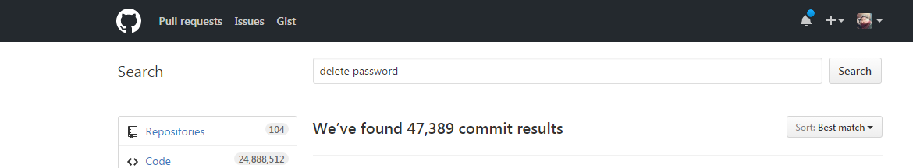
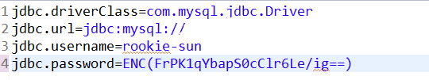
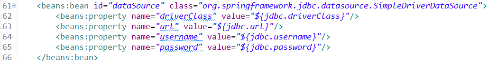
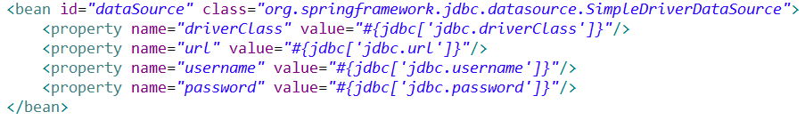
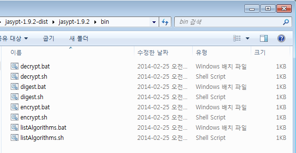
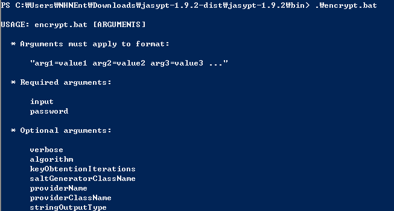
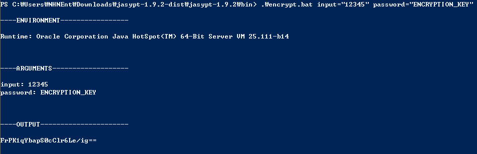
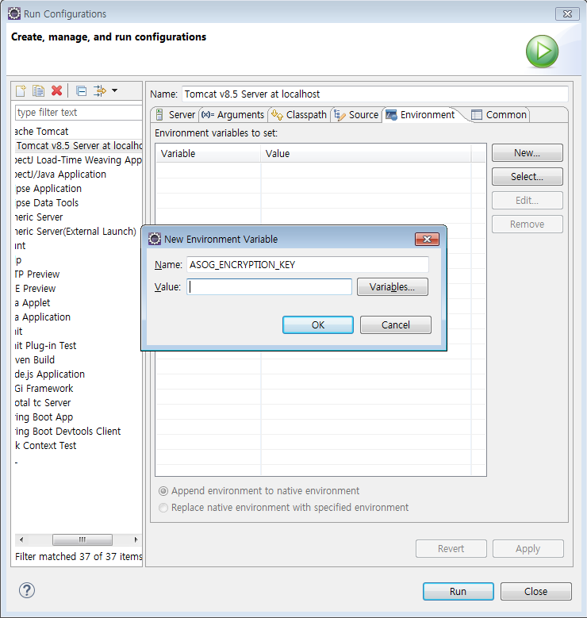

Jasypt를 이용한 properties 암호화 spring4
-읽음
Github 또는 그 외의 공개 장소에 프로젝트 관리를 하다보면 DB 패스워드 등 보안에 민감한 정보들이 노출되기 쉽다.

깃헙에 delete password 라는 키워드로 커밋 검색 결과… delete password 커밋해도.. 이전 커밋에는 패스워드가 노출되어있다는 것.. 애초에 올리질 말아야 한다
그 외에 OAuth에 필요한 키, 다른 API 토큰들 이런 정보는 보호해야 한다. 하지만 문제가 되는 부분인 협업을 하면서 민감한 정보들만 보호하면서 공유해야한다는 것이다.
지금까지는 해당 설정파일을 따로 만들고 설정파일만 메신저로 공유하며 Github에는 설정파일을 제외한 정보들만 올리는 방법을 사용했다.
이번 기회에 제대로 된 정석적인 방법을 구글링 했고 몇가지 키워드를 얻을 수 있었다.
Maven의 pom 암호화 기능.
pom.xml에 민감한 정보가 들어가야 할 때, 예를 들면 deploy 타이밍에 서버 계정이 들어가야 하는데 이 부분을 암호화 할 수 있도록 도와준다고 한다. 내가 찾던 properties 암호화는 아니었지만 알아두면 좋을 것 같다.
https://maven.apache.org/guides/mini/guide-encryption.html
Jasypt 라이브러리
Encrption이라는 키워드로 검색했을 때 Jasypt 라는 라이브러리가 자주 등장했다. 자바에서 암호화를 쉽게 할 수 있도록 도와주는 라이브러리였다. 나는 Spring에서 프로젝트가 실행될 때 암호화를 해제하는걸 원했는데 관련 블로그에서는 java 코드 내에서 암호화, 복호화 하는 내용만 다루고 있었다.
Spring Jasypt
역시 Spring에 적용 가능한 Library가 존재했다. 암호화 된 패스워드를 풀기 위한 Key는 각 서버의 환경변수로 보관함으로써 Github에는 암호화 된 프로젝트를 올릴 수 있었다.
Jasypt 그 엄청난 삽질기
Jasypt 는 꽤 오래된 라이브러리였다. 현재 maven repo에 있는 1.9.2.. 2014년 2월 버전. spring 3.1버전 지원한다고 되어있고 그 이후로는 업뎃이 없었다. 이게 발목을 잡을 줄이야..
Jasypt이 properties를 암호화 하고 사용하는 방식
- Tomcat에서 Spring 프로젝트가 올라가면서 context 가 생성된다
- 그 타이밍에 context에 있는 jasypt 객체들이 암호를 풀어준다.
- 암호를 풀려면 “키” 가 있어야 한다.
- 근데 결국 “키” 가 프로젝트 내부에 있으면 보안 없는거나 마찬가지 아닌가?
- 그래서 그 “키”는 프로젝트 내부가 아니라 구동 서버의 환경변수로 존재한다. 고로 안전하다.
Jasypt을 사용해보자
maven dependency 설정
- pom.xmp 에 Jasypt-spring 라이브러리를 추가한다.
1 | <dependency> |
- 메이븐 레포를 보면 jasypt-spring31, jasypt-spring3 이렇게 두 가지 버전이 있다. jasypt-spring3은 spring 3.0까지 지원하고 그 이후로는 jasypt-spring31이 spring3.1 부터 최신까지 지원한다고 공식 홈페이지에 써있다. Spring 4.3.3 을 쓰는 지금 jasypt-spring31을 사용해서 동작을 확인했다.
spring context 설정
- context에 복호화를 위한 객체 3개를 bean으로 만들어준다.
1 | <beans:bean id="encryptorConfig" class="org.jasypt.encryption.pbe.config.EnvironmentPBEConfig"> |
- 이렇게 3가지 bean을 만든다. 1개씩 살펴보자.
1 | <beans:bean id="encryptorConfig" class="org.jasypt.encryption.pbe.config.EnvironmentPBEConfig"> |
algorithm
암/복호화 알고리즘이다. 암호화 할 때 쓴 알고리즘 이름을 넣어야 한다. 저 필드에 넣을 수 있는 값은 여기에서 볼 수 있다.passwordEnvName
환경변수로 지정한 키 값이다. 리눅스 기준 echo $ASOG_ENCRYPTION_KEY 했을 때 출력되는 값을 넣어주는 부분이다. “키” 를 프로젝트 내부가 아닌 외부에 저장하는 방식.
당연히 프로젝트 복호화를 위해 서버 bashrc 등 rc 파일에 export ASOG_ENCRYPTION_KEY={진짜 키} 가 되어 있어야 한다. 안그러면 익셉션 발생!
1 | <beans:bean id="encryptor" class="org.jasypt.encryption.pbe.StandardPBEStringEncryptor"> |
여긴 별 거 없다. StandardPBEStringEncryptor PBEEncryptor를 상속받는 다른 클래스도 사용할 수 있다는 거만 알아두자.
1 | <beans:bean class="org.jasypt.spring31.properties.EncryptablePropertyPlaceholderConfigurer"> |
- 이곳에서 암호화 된 값들이 있는 .properties 파일의 위치를 설정한다. 주의해야 할 점이라고 한다면 bean class 부분을 보면 얘만 spring31 패키지에 포함되어있다는 것
삽질한 부분
- properties 파일은 다음과 같이 생겼다.

그리고 사용하는 부분은 context.xml의 경우 다음과 같다. 현재 잘 구동되는 코드..

그리고 이제 다음에 안돌아 가던 코드..

차이점… value에서 “#” 을 이용해서 가져오느냐 “$”를 이용해서 가져오느냐의 차이..
과거에는 “$”를 이용해서 properties를 가져오는 방식을 많이 사용했다고 한다. 이 경우 각 프로퍼티 파일들이 하나로 인식되어 다른 파일에 같은 프로퍼티가 있을경우 중복되어 에러 발생가능성이 있다고 한다.
그래서 언제부터인지는 모르겠지만 “#” 키워드를 이용해 파일마다 id를 부여하여 이런 문제를 겪지 않도록 한다고 한다.
“#”이라고 하면 jasypt가 복호화 안해준다. jar파일 디버깅까지 하면서 찾은 결과..
“$” 방식으로 프로퍼티를 읽어야 jasypt가 복호화 해준다..ㄷㄷ “#”이 최신방식이라고 했는데!!
아마 jasypt가 옛날 라이브러리라 그런가 싶다.
그래서 암호화는 어떻게 하냐고?
유틸리티를 다운받는다 bat, sh 로 제공되어 윈도우, 맥, 서버환경 모두 사용 가능하다.
http://www.jasypt.org/download.html
다운받고 압축을 풀고 bin 디렉토리에 들어가보면 이렇게 생겼다.

구성품
- encrypt.sh : 암호화 툴
- decrypt.sh : 복호화 툴
- digest.sh : 모르겠음, 사용안함
- listAlgorithms : 사용 가능한 암복호화 알고리즘 리스트 보여줌
encrypt로 암호화 해보자
- 일단 그냥 encrypt.sh를 실행해보자

친절하게 사용법을 알려준다. 그럼 알려준대로 실행해보자

OUTPUT 나온 값을 이제 properties 파일에 써준다. ENC(OUTPUT나온 값) 이렇게 써야 한다.
주의할 점
input과 password 필드가 있다. input이 암호화 할 대상이고 password는 대칭키다. 헷갈리면 안된다.
다시 input은 실제 DB비번 등 암호화 해야 하는 대상.
password는 환경변수로 갖고 있어야 할 키.
참고
이클립스에서 환경변수 값을 못읽는다?
- eclipse에서는 환경변수 못 읽는다. 검색해봤는데 영어로 어렵게 설명해준다. 결론은 project -> run configuration 에 들어가면 직접 환경변수 설정할 수 있다는 것이다.

jasypt 에서 not operation exception 발생하는 경우
무슨 정책 때문에 그렇다고 한다. 오라클 홈페이지 가서 자신이 사용하는 JDK 버전에 맞춰서 JCE 다운받아서 덮어씌우라고 한다. 나는 이 경우가 없어서 사용하진 않았지만 혹시몰라서 메모!